Start with Set up path… → Run SI → inspect the route. The route fills the work area by default. Setup opens manual input fields, return settings, IBIS, eye options and multi-net cases. Details opens the complete results table; Fit frames the actual route, and Focus view hides/restores panels without changing the analysis. Files holds setup/result Save and Load, reports, Blender and KiCad circuit export. PCB contains editor cross-selection and route/return highlighting. Other checks remain in the top tabs.
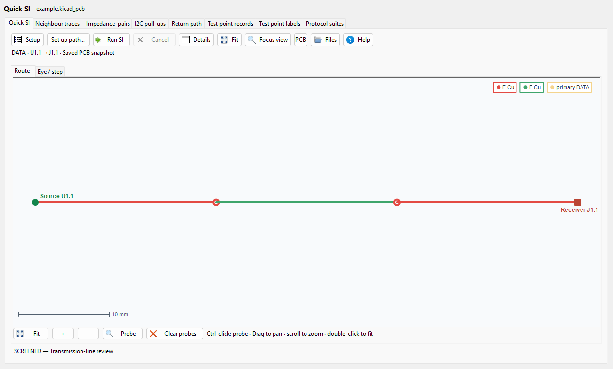
Windows native source capture, 2026-10-30, KiCad 10.0.6 Python 3.11 / wxPython 4.2.2. Synthetic 60 mm saved route, two vias, explicit 50 Ω and effective Er 3 assumptions. Source unchanged; no private data, personal paths or redactions. Not measured-board validation.
Save setup… suggests <board>.quick-si.setup.json beside the PCB and lets you choose another filename or folder. Load setup… restores route fields, reference layer, return nets and exact optional return pins, eye settings, checked study nets, drafted cases, crosstalk pairs and IBIS selections.
Changed board revisions require explicit review; unavailable nets, pads, layers or changed/missing IBIS models stop loading before inputs change. Keep external IBIS files available when moving a setup. Loading setup clears old results: run a fresh analysis. Files → Load results… instead opens completed numerical result JSON read-only without solving. The two file types are separate. Cancelled dialogs and invalid files leave existing inputs unchanged; the PCB is never written.
Project simulation library (updated source): Save simulation opens a file chooser in the PCB project folder for complete numerical JSON. The project library also retains records separated by plugin and deterministic content ID. Load simulation opens a selected record in a native read-only viewer with supported fields, graphs, probes and time steps. Loading does not run a solver or change the board. Its source banner marks matching, stale or unverified data; full arrays remain available in Advanced data. HTML/PDF reports remain separate exports.
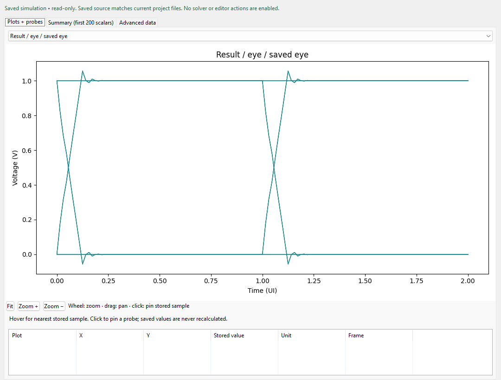
Save complete results (updated source): Files → Export HTML / PDF report… writes HTML and complete numerical JSON. Saved-board results also include a .pocket-kivi.json companion bound to the original PCB fingerprint. Live editor results are explicitly unbound; rerun from the saved board for verified binding. Available path, eye and waveform samples remain complete.
Complete tutorials: Marble replay · White Rabbit replay · Every workspace and dialog · All CLI parameters.
Detailed user guide: Open the complete offline guide for step-by-step setup, every workspace tab, CLI recipes, report export and troubleshooting. Markdown edition.
Measure a routed source-to-receiver path, screen delay and resistive termination, and export local evidence. This upgrades the existing Signal Integrity Advisor package; no second SI plugin is needed.
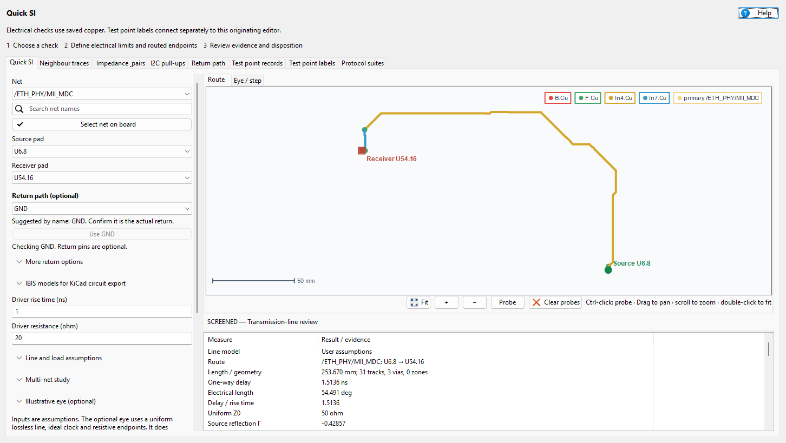
Saved Marble route U6.8 to U54.16 on /ETH_PHY/MII_MDC: 253.670 mm, 31 tracks and three vias. This illustration declares a uniform 50-ohm line and effective Er 3.2, 1 ns edge, 20-ohm driver, 50-ohm load and 100 MHz. The displayed 1.5136 ns delay is assumption-based. It is not a measured or fully extracted channel; SCREENED is not protocol qualification. GND is explicitly chosen for a geometric return review.
The visible return chooser handles the normal one-return case. Expand More return options only for extra nets, optional endpoint pins or the reference-layer override. Expand Line and load assumptions to inspect the line assumptions used above. Drag workspace dividers to enlarge settings, route or results. Capture provenance.
Open Neighbour traces, choose/type an exact target net (blank searches all connected nets), select a copper layer and radius in mm, then Map neighbours. Search results, hover/click traces or select a table row for shortest edge gap, parallel overlap and closest board location. Wheel zooms, drag pans and Fit map restores the overview.
Colour means geometric gap: red at contact, amber at half the radius, teal at the radius. It is not field intensity, interference voltage or compliance. UNKNOWN coupling stays unknown. Only straight same-layer tracks are searched; arcs, vias, pads, zones and other-layer coupling are not solved. An empty map does not establish zero interference.
Optional explicit reference/material/edge inputs reuse the existing converged ideal homogeneous-plane equal-width matched-end model. Reference continuity, terminal direction and whole-route loading remain unresolved. Link current study sections retains directed study NEXT by matching saved-source hashes and UUIDs; section extent/reference evidence stays separate and peaks are never added. Export retains searchable/selectable SVG, HTML/JSON, units, coverage and unknown reasons. Input changes clear stale maps; changed saved source requires reopening. Budgets: 200,000 tracks/comparisons, 500,000 index references, 800,000 candidate visits, 2,000 pairs, 32 local models and 15 seconds. Narrow scope when INCOMPLETE. CLI: neighbours board.kicad_pcb --net DATA --radius-mm 1 --html neighbours.html --output neighbours.json.
U1.1 and J1.1.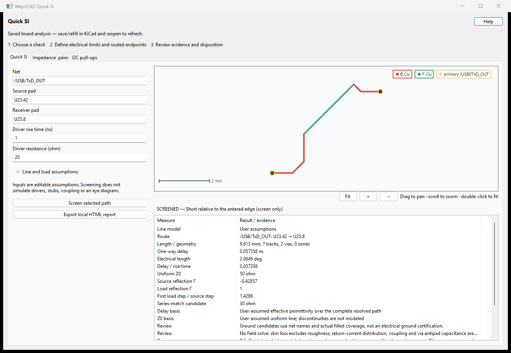
This Marble route is 9.612525 mm with 7 tracks and 2 vias. The screenshot assumes 50 ohm Z0, effective Er 3.2, 1 ns rise time, 20 ohm source and open load: 57.3577 ps delay and a 30 ohm series-match candidate. These are conditional screening values, not USB compliance results.
| Quantity | Definition / caution |
|---|---|
| Delay | Complete modeled delay, or length × sqrt(effective Er) / c under an explicit assumption. Partial RLC delay is not used as a complete total. |
| Electrical length | 360 × frequency × delay. Frequency is not assumed to be the data rate. |
| Edge screening | Request transmission-line review when delay is at least one sixth of the entered rise time. A short-path result is not signoff. |
| Reflection Γ | (R − Z0) / (R + Z0), ideal resistive endpoint model. Open load +1, short −1. |
| First arrival | Z0 / (Rsource + Z0) × (1 + Γload). First lossless load step, not peak overshoot or an eye diagram. |
| Series candidate | Z0 − Rsource when nonnegative. Review topology and device limits before choosing termination. |
SCREENED is not PASS. INCOMPLETE retains unresolved line terms; UNRESOLVED has no usable endpoint path. Explicit assumptions never establish connectivity. Vias, reference transitions, multi-terminal branches and zone corridors require further review. Reports list structured blocker codes and the next action for each missing input or unsupported model.
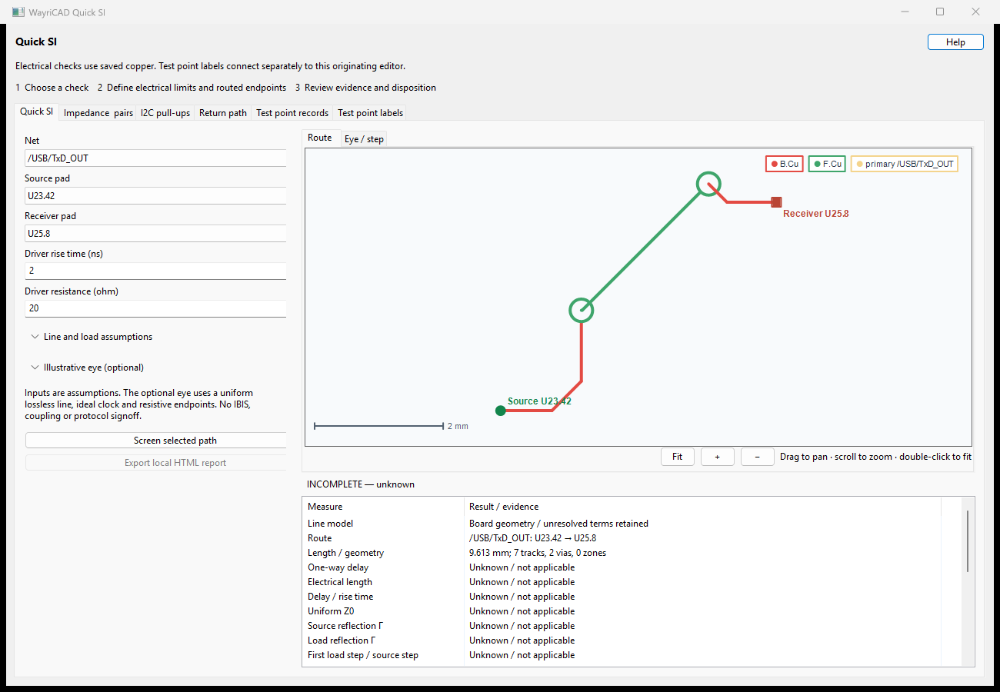
Without explicit line assumptions, this route's unresolved total delay and uniform Z0 remain unknown.
Expand Illustrative eye (optional), enable the model, enter the NRZ bit rate and open-circuit source swing, then screen the path. The Eye / step tab and exported HTML show the receiver PRBS7 eye and step response.
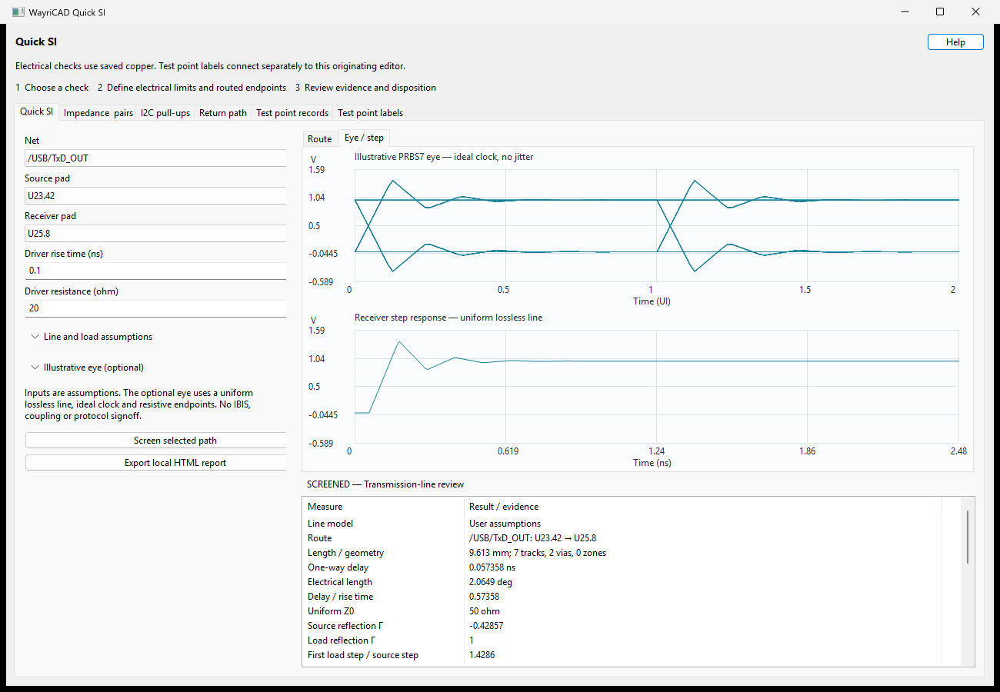
This capture uses the same Marble path with assumed 50 ohm Z0, effective Er 3.2, a 100 ps rise time, 1 Gbps bit rate, 1 V open-circuit source swing, 20 ohm source and open receiver. It is not a USB compliance result.
The model uses a uniform lossless line, resistive endpoints and equal linear rise/fall ramps; rise time is 10–90%. Periodic PRBS7 includes settled history. The ideal clock is aligned to first arrival. Center opening is minimum high minus maximum low at 0.5 UI, not optimized eye height. Negative opening indicates overlap at that phase. The 64 samples/UI can miss narrow peaks.
No IBIS nonlinear drivers, receiver capacitance, coupling, via discontinuities, noise, jitter, clock recovery, eye masks or BER are simulated. Vias can contribute to route delay estimates but their discontinuities are not modeled. Unknown delay/Z0, zones and extra terminals make a routed eye unavailable. Excessive or non-decaying reflections produce an error.
wayricad-si eye --z0-ohm 50 --delay-ns 0.4 --source-ohm 20 --rise-ns 0.1 --bitrate-mbps 1000 --swing-v 1 --html eye.html --output eye.json
The standalone eye command needs ordinary Python only. For a board path add --eye-bitrate-mbps 1000 --eye-swing-v 1 to screen. An explicitly requested unavailable routed eye returns exit code 3. Source matching can be compared by changing resistance and rerunning; input changes clear old plots.
Model basis: TI AN-807: Reflections—Computations and Waveforms. Successive receiver arrivals follow the product of the source and load reflection coefficients; the report preserves all assumptions.
The IBIS models for KiCad circuit export pane is separate from the ideal Eye / step result above. After saving and screening a route, click Load IBIS… for the source and receiver, or Use source file for receiver. Choose the exact IBIS Component, Pin, compatible Model and one typ/min/max corner for VCC and pin R/L/C. The PCB pad number is suggested only when it exactly matches an IBIS pin; choose a different pin explicitly for a reviewed package mapping. The pane displays PCB Reference.Pad → IBIS Component.Pin, and the file tooltip shows its full path. Ambiguous components or models need a choice; source/receiver direction is not inferred from IBIS.
For a multi-net study, select each completed case above the route preview and assign its source and receiver. Export KiCad circuit… and Copy circuit… let you check completed cases; a checked case with a missing assignment produces an error. Choose duration, maximum timestep, stimulus frequency and duty cycle (defaults 100 ns, 0.1 ns, 100 MHz and 50%). Copper thickness is blank by default. Via L/C is enabled only with explicit approximation consent. Choose a parent folder for a new SI-circuit-… bundle. Copy creates the same bundle first, then copies schematic text. Keep the copied models/ IBIS files and bundle; a pasted circuit references them. Open the exported project in KiCad Schematic Editor, inspect its manifest and run KiCad's native simulator. Export does not itself run the IBIS transient.
The circuit requires exactly two signal pads and whole-net evidence that every routed item belongs to one complete path. Zones, branches, stubs, loops and unresolved sections are rejected. Vias need reviewed manual capacitance and complete loop inductance with approximation consent. If saved copper thickness is missing, enter a reviewed thickness and rescreen with explicit assumed Z0 and effective permittivity before exporting. The project models independent point-to-point cases with an ideal common reference, not inter-net coupling, full-wave fields or protocol compliance. Changed board/rules files or IBIS bytes invalidate the export. Each fresh export uses distinct non-ground signal names. Pasting the same clipboard fragment repeatedly reuses its global signal names and connects those copies; re-export for an electrically isolated second copy. Ground remains common.
wayricad-si ibis-catalog C:/Projects/Example/models/driver.ibs --output driver-catalog.json wayricad-si circuit route.json --assignments ibis-assignments.json --output C:/Projects/Example/SI-circuit-review
Use the catalog's actual SHA-256, component, pin and model names in ibis-assignments.example.json; replace its zero hashes. Paths are relative to the assignment file. The single-route case ID is route; study exports use their case IDs, with repeatable --case to select a subset (otherwise every case is required). CLI options include --allow-approximations --via-capacitance-pf --via-inductance-nh and --copper-thickness-um. The catalog reads metadata only; KiCad interprets the model. See the KiCad simulator and IBIS guide and the official IBIS 7.1 specification.
wayricad-si inspect board.kicad_pcb --net "/USB/TxD_OUT" wayricad-si screen board.kicad_pcb --net "/USB/TxD_OUT" --start U23.42 --end U25.8 --rise-ns 1 --source-ohm 20 --z0-ohm 50 --epsilon-eff 3.2 --output quick-si.json --html quick-si.html
From source use python -m signal_integrity_advisor_plugin.cli. Ordinary Python hands analysis to the compatible installed KiCad runtime. Initial dependency setup may require internet; calculations and reports are local. Omit Z0/Er options to retain automatic unknowns. Use --load-ohm 50 for a resistive load. Exit codes: 0 inventory/screened, 1 error, 2 unresolved, 3 incomplete. Code 0 is not electrical approval.
Impedance & pairs provides editable targets and route/skew review. It does not infer coupled differential impedance by adding two single-ended values. I2C pull-ups checks the range from (VDD − VOL) / IOL and tr / (0.8473 × Cbus).
For unresolved routing check exact pad labels, physical continuity and filled zones. For unknown line estimates check continuous adjacent return-plane coverage and the saved Board Setup stackup. Automatic Z0 requires physical dielectric thickness and Er; missing values remain unknown and are never replaced by generic FR-4 dimensions. Follow the report's blocker actions rather than entering a number merely to obtain a result. A saved snapshot needs save/refill and reopen after board changes. Changing a form input clears its prior report.
No full-wave, IBIS-based eye, crosstalk, receiver-capacitance or coupled-line simulation is claimed. Zone corridors are not full plane solutions; effective Er differs from bulk laminate Er. The tool never edits copper.
References: TI High-Speed DSP Systems Design; TI termination discussion; NXP I2C specification. See the packaged README for complete commands and validation.
Quick SI now includes the full Return path and Test point records tabs, including descriptor/fixture exports. Return-path reference · Test-point record reference.
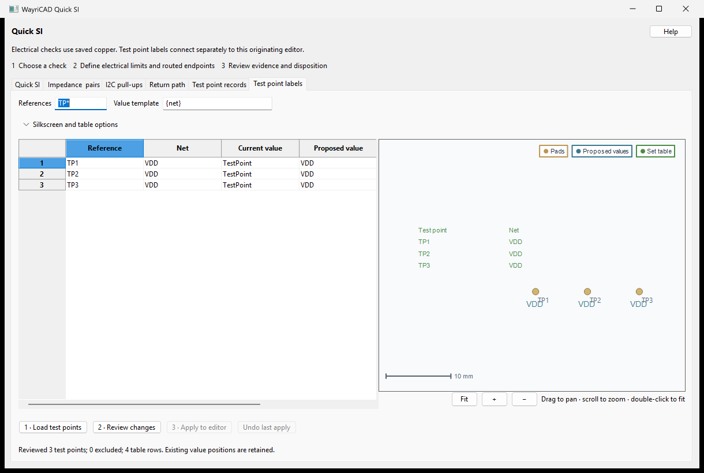
Locked, unconnected and multiple-net footprints are excluded. Saved-board standalone previews cannot apply. PCB value edits do not change schematic values and may be overwritten by a later schematic update.
Choose among 33 profiles for I2C, SPI, UART, CAN, I2S/TDM, parallel GPIO, SDIO, USB, LVDS, SerDes, PCI/PCIe, DDR, Ethernet and M.2 PCIe/SATA. M.2 alone does not identify an electrical interface. Profile rates and nominal targets are reference information, not compliance limits.
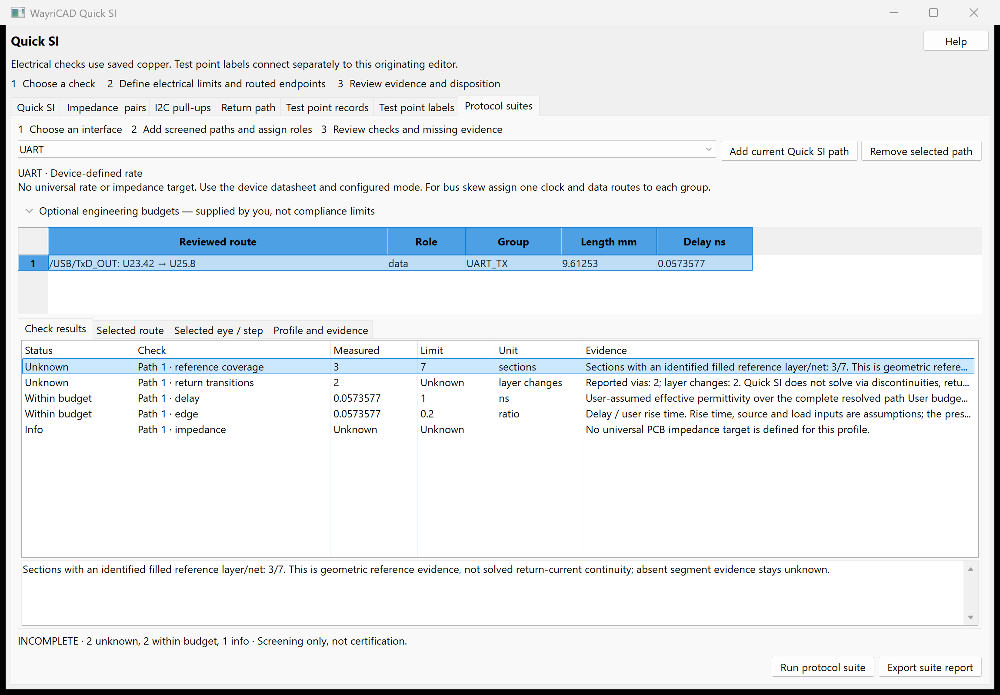
WITHIN_BUDGET applies only to evaluated quantities. REVIEW marks exceeded budgets or mismatched illustrative eye rate. INCOMPLETE retains missing evidence; BLOCKED identifies unusable input, duplicates, different saved revisions or unspecified M.2 interface. Vias/reference transitions are not solved. Independent single-ended routes cannot establish differential impedance, crosstalk or protocol certification.
wayricad-si profiles wayricad-si screen board.kicad_pcb --net DATA_P --start U1.1 --end U2.1 --role P --group lane0 --output p.json wayricad-si suite --profile uart --reports route.json --max-delay-ns 1 --html suite.html --output suite.json
The 1 ns budget above is an arbitrary example, not a UART requirement. For pairs add independently screened P and N reports to --reports and choose the actual pair profile. profiles/suite work with ordinary Python, offline. Suite exit codes: 0 within budget, 1 error, 2 blocked, 3 review/incomplete. At most 64 route reports, 16 MiB each. Saved-board changes require reopening and fresh screens; the CLI compares recorded revision hashes but does not reopen their source boards.
In Protocol suites, add P and N route snapshots with the same Group. Run the suite and open Pair delay / phase. Both leg delays, signed N-minus-P skew and pair mean-delay differences are shown. Select a row for full model evidence and its first route in Selected route.
Enter an explicit Pair phase frequency (MHz) for phase; leave blank for delay/skew only. Reference pair group is optional and defaults to the first valid pair alphabetically. HTML includes the complete static pair table, even without JavaScript. Changes clear stale results.
Skew = tN - tP; phase mismatch = -360 f (tN - tP), with seconds and Hz. Positive skew means N arrives later. The intended 180-degree differential inversion is excluded. Mean pair delay is (tP + tN)/2; lane skew compares that mean to the reference pair. 125 ps skew at 1 GHz means -45 degrees. Wrapped phase uses [-180, 180).
wayricad-si suite --profile lvds --reports p.json n.json --timing-frequency-mhz 100 --html pair-timing.html --output pair-timing.json
Each report needs explicit P/N role, pair group, distinct routed nets, resolved delay/model provenance and matching saved board fingerprints. The CLI compares recorded revisions and does not reopen boards. Check transmitter-to-receiver direction. Missing evidence remains unknown. These independent route estimates are not a coupled differential or dispersive phase solution; package/device/launch/via discontinuity delays and common-mode conversion are not solved. No phase/skew standard is inferred. For a pure delay, H(f) = exp(-j 2 pi f t), which gives the stated propagation phase; this does not establish channel bandwidth.
Install the WayriCAD CLI wheel alongside the GUI plugins. In the saved project folder, run wayricad jobs init --preset inventory, then wayricad jobs run --keep-going. Reports, logs and a linked HTML summary go into a fresh reports/wayricad/ run folder. Inventory lists available nets and paths; choose the electrical preset and explicit terminals for numerical analysis.
Use wayricad jobs jobset --output analysis.kicad_jobset to create a native KiCad jobset. Use --merge existing.kicad_jobset --position 1 to insert into an existing sequence, writing a new file. Open the resulting jobset in KiCad's Jobsets manager and run it. Nonzero tool exits and missing reports fail the sequence; successful execution is not engineering approval. Complete setup, presets and automation guide.
The CLI can read Touchstone 1.0 S networks using the separately installed Nubis SignalIntegrity 1.5.2 library. Install it explicitly in the Python environment running wayricad-si; no downloads occur during analysis. Reports include the input hash, backend version, frequency grid, complex response, dB magnitude and wrapped phase. Zero response has null dB and phase. Port numbers start at 1; choose to-port 1 for S11.
wayricad-si network channel.s2p --to-port 2 --from-port 1 --output channel.json wayricad-si line-network route.json --stop-hz 1000000000 --points 1001 --output ideal-line.s2p
Touchstone input must have one explicit option line, positive real common reference impedance, strictly increasing nonnegative frequencies and complete records (at most 32 ports, 10001 records, 16 MiB). Touchstone 2.0 and noise sections are unsupported. The line exporter needs no optional dependency. It accepts complete two-terminal Quick SI reports without zone corridors and exports an ideal lossless uniform line, not extracted board S-parameters. Port 1 is the selected source and port 2 the receiver. Its explicit frequency limit is in Hz, with DC included. Vias, coupling, stubs, source/load and material losses are omitted. The saved report is used without reopening its board. Existing Quick SI eye screening is unchanged; the upstream desktop, calibration and advanced eye workflows are external, not embedded or validated by this bridge. Network processing works offline after dependencies are installed. Run wayricad-si desktop --check to check full desktop imports without opening a window, or wayricad-si desktop [trusted-project.si] to open the original upstream application. Use --python to select its installed Python interpreter. The command waits until the application closes and surfaces errors. Only open trusted upstream projects; their equations and saves use the upstream application's behavior. This exposes the original desktop in a separate process, not a native Quick SI tab. ERL, PZ and IXT retain their upstream console commands. See the packaged README for usage and upstream attribution.
Choose the net and two pads, then screen the path. Saved stackup data supplies first-order trace and via travel time. APPROXIMATE assumes ideal continuous reference planes and does not solve via reflections or coupling. Route resistance, supported section impedance range and local endpoint estimates remain visible even when a uniform route impedance cannot be calculated. Missing stackup data is reported explicitly. User Z0/Er overrides remain assumptions.
Use Search net names or Select net on board to choose a saved pad, via or track net. Select the two terminals and rerun. In route previews, Probe or Ctrl-click pins geometry coordinates; Clear probes removes them.
Offline route, eye and step plots provide hover values, click-to-pin probes, drag to pan, wheel zoom and Fit. Static export figures remain available for printing. Native eye/step plots show exact time and voltage samples; click to pin and right-click to clear. Unknown samples leave gaps. Probes do not establish unmodeled via reflections, differential coupling or protocol compliance.
Choose the actual return nets with the searchable multi-select Find… control. Optionally select the source and load/receiver return pads; these are declarations, not a solved current loop. Quick PI provides the Return path tab; Quick SI adds an optional Explicit return-path review.
The review covers the whole signal net. Inspect sampled reference coverage, observed signal-via routing layers, reference nets/layers, and nearby return vias with their distances, spans and sampled copper contact. Proximity alone is not continuity; mismatched return nets and missing contact evidence stay unresolved. Filled-zone geometry does not establish return resistance, inductance or current distribution. Save and refill zones before rerunning after edits. Exported HTML retains detailed evidence tables.
In the normal native sidecar, Run SI starts a separate worker for measurement, the optional eye and return review. You can continue using the window. Cancel, an input change or closing the window cancels the owned job; older inputs cannot replace the current result. The worker has a 300-second time budget.
The saved PCB, project and custom rules are checked before and after the run and before export. Reopen Quick SI after changing those files. Analysis does not write the PCB. A legacy live-board window remains synchronous on the UI thread so that unsaved edits are not replaced by a saved-file calculation.
Select route in PCB selects the measured route's exact item UUIDs; clicking a route preview item selects that item. Select return nets in PCB selects every checked return net. Missing, ambiguous or incompletely confirmed requests do not leave a partial selection.
Use PCB selection reads only the originating editor. The current signal net is preferred if present; several unrelated selected nets retain the existing inputs. Footprints contribute their pads. Pad roles are updated only when a known source or receiver makes the direction unambiguous. Otherwise choose the terminal roles explicitly. Reverse synchronization clears the previous analysis.
Navigation runs independently from analysis without passing native board objects to a worker thread. Reopen after saved source changes or UUID mismatches. Selection and zoom do not alter PCB geometry.
Quick SI has a draggable input divider and a horizontal divider above its results table. Enlarge the table to read more rows, or enlarge the route view. Expanded assumptions, return-path and eye controls scroll within the input form.
Route cases are independent. Optional directed local crosstalk pairs add coupled-section estimates; whole-route coupling, simultaneous switching and full-bus qualification remain outside scope. Missing terms remain unresolved. Editing inputs or changing saved PCB/project/custom rules invalidates results.
wayricad-si study C:/Projects/Example/board.kicad_pcb --config independent-routes.json --output study.json --html study.html wayricad-si screen C:/Projects/Example/board.kicad_pcb --net DATA --start U1.1 --end J1.1 --return-net GND --return-source U1.3 --return-load J1.3 --html return-review.html
Adapt independent-routes.json using exact net/pad names from inspect. Repeat --return-net for multiple return nets. COMPLETE means independent numerical screens completed; REVIEW and INCOMPLETE require review (CLI exit 3). A return audit is sampled geometry evidence, not proof of a continuous electromagnetic current loop.
After assigning two or more study cases, choose Configure crosstalk pairs (optional). Explicitly select aggressor and victim case IDs, 10–90% rise time and open-circuit swing. saved-stripline uses the saved homogeneous stackup between two selected immediately adjacent reference layers; both filled planes must cover the pair and a field-margin corridor. Additional same-layer conductors, missing coverage or inhomogeneous dielectric remain unresolved. homogeneous-plane is a hypothetical one-plane model: enter center-to-plane height and Er explicitly.
Run the multi-net study and choose Review crosstalk results. The report lists actual parallel overlaps, gap, widths/thickness, even/odd impedances, NEXT peak, delay and supported/unmodeled route length. Four local ports are matched to sqrt(Zeven × Zodd); independent route source/load settings do not apply. FEXT is zero only in this ideal equal-velocity homogeneous model. Section estimates are not summed into a route waveform. Vias, bends, crossings, broadside coupling, branches and multiple physical-pad loading are not simulated. Finite copper thickness is modeled with boundary panels; adaptive refinement is numerical evidence, not physical qualification.
The offline export includes local NEXT plots and links to the original route cases. See coupled-routes.json for the CLI schema and the plugin guide for model limits and validation. Editing pair settings invalidates previous results; source fingerprints still guard exports.
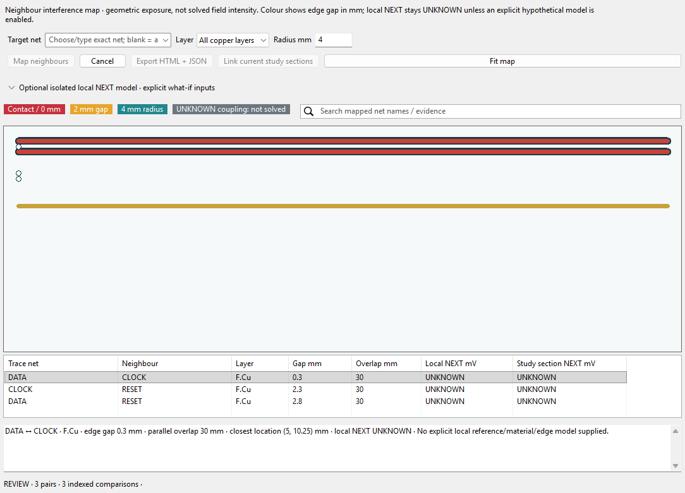
Computed native three-trace example. Colours encode geometric gap, with unsupported coupling kept unknown.
Most studies need no additional return fields. More return options contains extra return nets, optional source/receiver return pins and the impedance-reference layer. Find/Ctrl+F searches full names; endpoint lists show the selected component's pins first without assigning them. Duplicate pin labels retain exact saved pad IDs.
The impedance-reference layer defaults to Auto and remains separate from the actual return net used for geometric coverage. The geometry check does not prove return-current distribution or a closed loop.
For several cases on the same return domain, use Use this return setup for study cases. It copies only the selected return nets and clears optional per-case pins. A signal cannot be its own return. Edit exceptions in the study-case table.
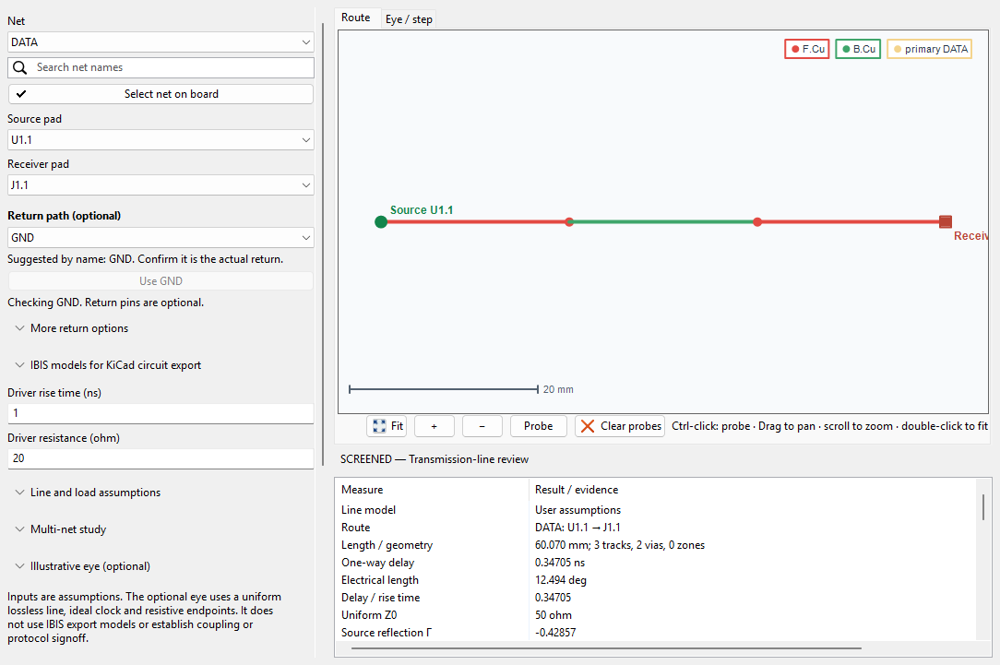
Computed synthetic route with declared line assumptions. Filled-zone return coverage is unresolved in this fixture.
Open Set up path… to choose the net, source and receiver, review the edge/line model and enable the optional ideal eye/step in one scrollable window. Search accepts * wildcards and ~ fuzzy matching. Swap roles explicitly when needed. Other same-footprint/same-net pads are shown for review but are never merged into an ideal SI terminal.
Apply setup clears stale results and exports; Apply and screen also runs the existing path solver. Cancel retains the workspace. Existing return choices are retained. Blank load means open; blank Z0 and Er keep geometry/stackup evidence and unknowns. Entered values are assumptions.
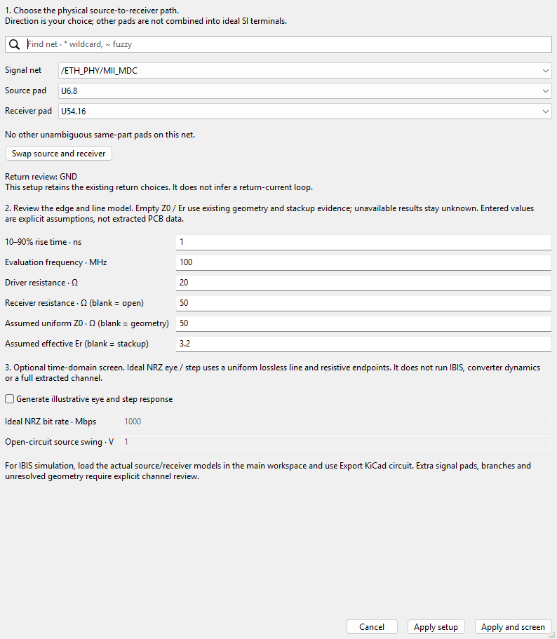
This is a native setup capture for public Marble, U6.8 to U54.16 on /ETH_PHY/MII_MDC, with explicit 50 Ω, Er 3.2, 1 ns rise, 20 Ω source, 50 Ω load and 100 MHz. It is not a new simulation result. See the README for image provenance and model boundaries.
The native results table includes model blockers, their next actions and whole-net channel coverage. Extra loads, branches and unmodeled routing remain review items, even when a chosen route is measurable.
In circuit export, Suggest timing from selected routes proposes the smallest rise/20, delay/20 and period/100 timestep, and a duration covering ten slowest periods, eight longest delays and ten slowest rises. Every chosen route needs a positive resolved delay, declared rise time and frequency. The two-million duration/step ratio is enforced without silently coarsening. Adaptive internal steps may be smaller and more numerous. Actual IBIS bandwidth and timestep convergence still need review. Both schematic and clipboard use .tran TSTEP TSTOP 0 TMAX, with the reviewed timestep explicitly setting TMAX. This bounds adaptive internal steps; it does not guarantee uniform output samples or convergence. See the official ngspice .TRAN definition. Manual via approximations remain off unless you explicitly enable them.
wayricad tools run quick-si -- timing-advice study.json --case clock --output timing.json exposes the same bounded advice to scripts. It records the input report hash and cases and writes a new file; no board or simulation is run. Use reviewed values with the existing circuit export CLI.
In Export KiCad circuit or Copy circuit, open Shunt capacitors…. Enter a case, unique capacitor ID, source/receiver attachment, C in nF, ESR in mΩ and ESL in nH. Each capacitor remains an individual series ESR/ESL/C branch to ideal common ground. Blank C is an error; zero ESR/ESL omits that element.
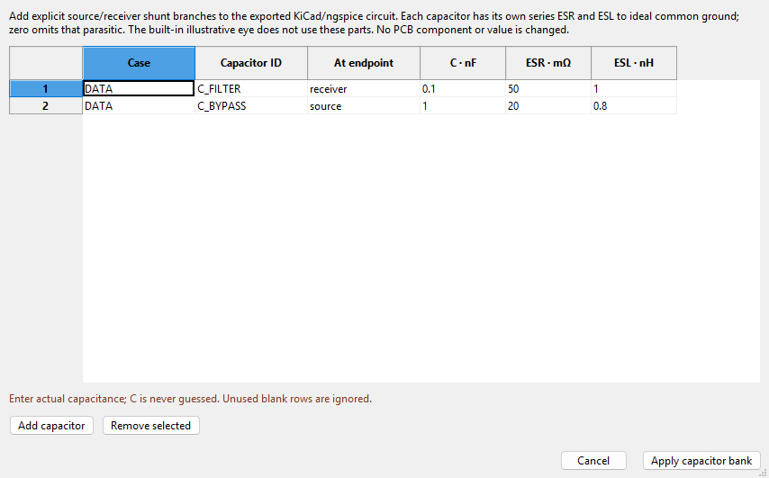
Native demonstration editor, entered receiver 100 pF/50 mΩ/1 nH and source 1 nF/20 mΩ/0.8 nH. No board was opened or changed; this is not a solved waveform.
Run the exported schematic in KiCad/ngspice to evaluate transient impact. Schematic, clipboard and manifest retain the exact connections and values. Refine the maximum timestep before trusting peaks. Route timing advice does not include capacitor/ESL timescales; a warning remains in the export settings. The built-in illustrative eye and resistive endpoint screen do not include these branches.
CLI assignment cases accept optional shunt_capacitors beside source/sink: each has id, at (source or receiver), capacitance_F, esr_ohm and esl_H. See the complete generic assignment example and README. Up to 64 branches per case / 256 per export; circuit block limits still apply.
Only entered endpoint branches are modeled. Arbitrary PCB attachment locations, capacitor fanout/return parasitics and voltage-dependent capacitance are not inferred. Existing whole-net additional-pad/branch guards still apply; a manual shunt does not waive them. Parallel branch admittances add: Zk(s)=ESR+s·ESL+1/(s·C), Y(s)=Σ1/Zk(s). Optional installed-ngspice tests check exported values against analytical RC and RLC transients; these are passive reference checks, not full-channel qualification.
Export HTML for interactive board views and exact probes. Use Print / save as PDF for browser printing. For a static PDF without a browser, run python -m wayricad_runtime.tool_cli report-pdf review.html --output review.pdf --evidence review.json after installing wayricad[reports]. The exporter retains text, tables and embedded PNG/JPEG figures. Canvas, SVG and unsupported views are explicitly listed as retained in HTML. Any tool JSON can use python -m wayricad_runtime.tool_cli report result.json --html review.html --pdf review.pdf; no analysis is recomputed.
This feature is in the updated source; existing 3.6.40 installers do not contain it.
After a supported result, choose Blender…. Select a new export folder and optionally open an installed Blender. Export runs in a worker. Geometry and available result fields are preserved; animation uses stored computed samples. A static SI/DC result does not become a traveling-wave or transient simulation. Simplified component envelopes are not STEP solids. Full Blender workflow and limits.